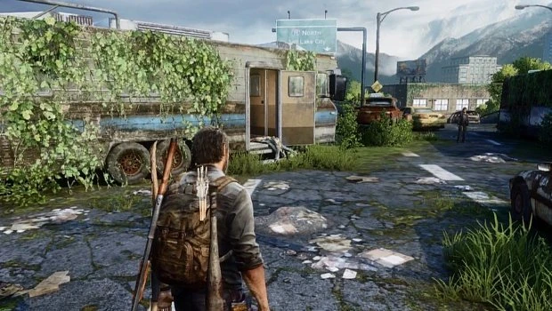

содержание
Автопарк
Автопарк
Глава
Глава

Сезон: Весна
Подглавы:
Съезд с шоссе,
Подземный тоннель
Локация:
Солт-Лэйк-Сити
Мультиплеер
Артефакты:
3
Учебники:
1
Комиксы:
2
Медальоны «Цикад»:
3
Хронология
Предыдущая глава:
Озерный Курорт
Следующая глава:
Лаборатория Цикад
«Автопарк» - десятая глава в Одни из Нас (англ. The Last of Us).
Наступила весна. Герои входят в Солт-Лейк-Сити, штат Юта, где они надеются встретиться с «Цикадами» в больнице Святой Марии. После зимних событий, между двумя образовалась крепкая связь, но Джоэл замечает что Элли до сих пор потрясена произошедшим, так как остается отреченной и молчаливой когда бы Джоэл не обратился к ней.
Их путь пролегает через шоссе и очередную заброшенную карантинную зону, пока они не доберутся до местного автопарка. Там Элли замечает что-то необычное и убегает. Джоэл догоняет ее и они обнаруживают стаю жирафов, свободно блуждающих в опустевшем городе. Сделав перерыв в пути, наслаждаясь видом животных, Джоэл выказывает сомнение по-поводу их цели. Он говорит, что им необязательно делать это, что они могут развернуться и вернуться к Томми и начать новую жизнь. Но Элли настроена закончить дело, особенно после всего того, через что они прошли. Секундами позже она добавляет, что как только они закончат с Цикадами, то смогут пойти, куда бы ни сказал Джоэл.
Сюжет
Съезд с шоссе
Наступила весна. Герои входят в Солт-Лейк-Сити, штат Юта, где они надеются встретиться с «Цикадами» в больнице Святой Марии. После зимних событий, между двумя образовалась крепкая связь, но Джоэл замечает что Элли до сих пор потрясена произошедшим, так как остается отреченной и молчаливой когда бы Джоэл не обратился к ней.
Их путь пролегает через шоссе и очередную заброшенную карантинную зону, пока они не доберутся до местного автопарка. Там Элли замечает что-то необычное и убегает. Джоэл догоняет ее и они обнаруживают стаю жирафов, свободно блуждающих в опустевшем городе. Сделав перерыв в пути, наслаждаясь видом животных, Джоэл выказывает сомнение по-поводу их цели. Он говорит, что им необязательно делать это, что они могут развернуться и вернуться к Томми и начать новую жизнь. Но Элли настроена закончить дело, особенно после всего того, через что они прошли. Секундами позже она добавляет, что как только они закончат с Цикадами, то смогут пойти, куда бы ни сказал Джоэл.
Подземный тоннель
Герои проходят зону с большим количеством медицинских палаток, где Джоэл рассказывает о первых месяцах вспышки инфекции, как много разрушенных семей окружало его. Чуть позже Элли дает Джоэлу фотографию с Сарой, которую она украла у Марии на дамбе. Не без благодарности, Джоэл берет фотографию, комментируя, что нельзя бегать от прошлого вечно. Их путь проходит через подземный тоннель, кишащий заражёнными. Миновав данный участок и проделав путь через затопленный коллектор, они попадают в ветку тоннеля с бурным течением. Джоэл командует Элли следовать только по его следам. Героям удается покрыть небольшую дистанцию прыжками по крышам машин. Но на одном из уступов Джоэл срывается и падает в салон автобуса, который начинает уносит течение. Элли спешит на выручку, но обоих накрывает волна. Джоэл подхватывает Элли в двадцати метрах от себя, которая уже захлебнулась и потеряла сознание. Вытащив ее на поверхность, Джоэл пытается откачать воду из легких путем искусственного дыхания, но в этот самый момент двое патрульных из Цикад приказывают Джоэлу поднять руки. Не подчинившись приказу, тот получает удар прикладом.Коллекционные материалы
- Артефакты - 3
- Семейное фото - в доме на колесах на шоссе, в самом начале главы.
- Записка жене - находится на автобусной станции имени Логана Джеймса (англ. Logan James) по левую сторону вниз по лестнице в открытом чемодане.
- Карта КЗ "Солт-Лейк-Сити" - в палатке в дальнем углу территории автобусного депо, напротив верстака.
- Медальоны Цикад - 3
- Катерина Периш (000149) - как только герои спустятся с шоссе по дорожному ответвлению, необходимо сразу завернуть за левый угол дорожной перегородки. Медальон находится между перегородкой и машиной, примыкающей к ней.
- Николь Хо (000201) - свисает со второго по счету осветителя с четырьмя прожекторами по левой стороне у палаток.
- Натали Хо (000202) - перед спуском в подземный тоннель, за автобусом.
- Справочники - 1
- Справочник по бомбам, том 2 - на трейлере грузовика с нарисованной красной головой лошади.
- Комиксы - 2
- Дикие Звезды: Преципитация - после встречи с жирафами, герои спустятся вниз по лестнице. Комикс будет находиться в мужском туалете помещения, в котором они окажутся.
- Дикие Звезды: Катализ - после того, как Джоэл сбросит Элли лестницу у пожарного грузовика, необходимо пробежать по вентиляции до ее конца. Комикс будет лежать у края.
Необязательные разговоры
- В самом начале главы, после окончания сюжетного диалога. (осторожно: время активации ограничено).
- После выхода из трейлера, Элли будет стоять у рекламы авиалиний на боку автобуса. Необходимо к ней подойти.
- На автовокзале, прежде чем Элли спустит лестницу для Джоэла, необходимо поговорить с ней.
- Встретив жирафа, обязательно погладьте его.
- На крыше, на панораме города и стаи жирафов.
- Перед выходом с автобусного депо, Элли захочет поговорить с Джоэлом и передать ему фотографию.
Запертые двери
- После того, как Элли откроет Джоэлу решетчатую дверь, в месте, где будет сидеть Щелкун, дальше по коридору будет разветвление. Дверь будет находится по правую сторону.
Интересные факты
- События главы происходят 28 апреля, как можно узнать из дневника Марлин на следующем уровне.